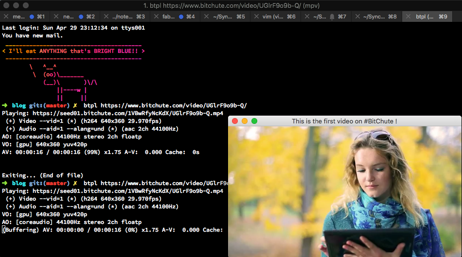
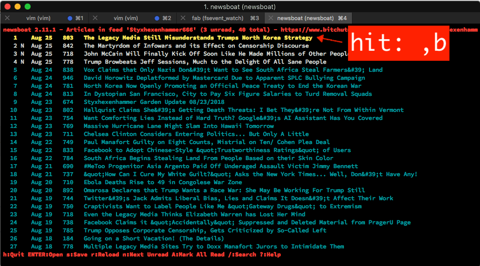

Using Newsboat to Watch Bitchute
Using Newsboat to Watch Bitchute
First, RSS still qualifies as a great technology. Even though RSS faded to obscurity in the past 8 years or so, it is still very useful. RSS was and will be an integral part of the internet same as HTTP, e-mail and IRC is.
In the age when information streams are controlled by few major players, it important not to forget that we are responsible for what we are consuming. This is why RSS is great with it, you can aggregate information from whole variety of sources: YouTube, Twitter, Blogs and even those old "Taiwanese Fishermen" sites.
I recently began using Newsboat RSS client and I fell in love with it. I loved
it so much that I even added my favorite YouTube channels as RSS feed. There
are tons of information on how you can watch any YouTube video using youtube-dl
on a mpv media player, but I wanted to go one step further I wanted to be able
to watch PeerTube and Bitchute videos (that I subscribed via RSS) straight from my Newsboat client.
Here is how to do it.
Prerequisites
mpvnewsboatyoutube-dl
It goes without saying that this tutorial will only work on Linux/BSD based systems.
Guide
First, Add this function to the end of your .bashrc or .zshrc file:
btpl(){ PAGE=$(curl -s $1) url="$(echo \"$PAGE\" | grep -Eoi '<source [^>]+>' | grep -Eo 'src="[^\"]+"' | grep -Eo '(http|https)://[^"]+')" # url="$(curl -s $1 | grep -Eoi '<source [^>]+>' | grep -Eo 'src="[^\"]+"' | grep -Eo '(http|https)://[^"]+')" TITLE=$(echo \"$PAGE\" | grep -oEi "<title>(.*)</title>" | cut -d '>' -f2 | cut -d '<' -f1) mpv --ontop=yes --title="$TITLE" --snap-window --autofit-larger='25%' --geometry='-10-10' --speed 1.75 $url & }
Let's explain some parameters of the command above:
--ontop=yes
: this will always display the video window on top. I did this because I wanted
something similar to "Picture In Picture" feature found on OSX machines.
--title=$TITLE
: it is the title of the mpv window.
--snap-window
: this is optional, but it helps when you are moving the window around the
screen, because it snaps it to the 4 corners of the screen.
--autofit-larger='25%'
: resizes the window to 25% (based on what is bigger width or height).
--geometry='-10-10'
: Displays the mpv player window to the BOTTOM RIGHT corner and makes sure that
there is a 10px margin.
--speed 1.75
: sets playback speed to 1.75 times the original.
Open a new terminal window, and paste code below:
btpl https://www.bitchute.com/video/UGlrF9o9b-Q/
If all went well, video should start playing.

Configure Newsboat
- Open your Newsboat configuration file:
~/.newsboat/config- on some linux distros this file is found at:
~/.config/newsboat/config
- on some linux distros this file is found at:
- Paste these lines below:
# only for OSX
browser open
# only for Debian
browser nautilus
# only for bash users
macro b set browser "source $HOME/.bashrc && btpl "; open-in-browser ; set browser open
# only for zsh users
macro b set browser "source $HOME/.zshrc && btpl "; open-in-browser ; set browser open
browser open
: This line is not talking about your web browser, but rather the browser of
your OS. On OSX system browser is open it handles many things: opens files,
handles various URLs, decides which program should open which file. Linux Arch
users will probably use linkhandler, for Debian'istas it will be nautilus
and Linux Mints should use nemo instead of open
macro b set browser [...]
: sets a macro on key press "b". Now every time you press ",b" characters
while in Newsboat. Hotkey for starting macros is always "," read more about
macros here
For more info about Newsboat config, you can go here
Add a Bitchute RSS test URL
- Open your Newsboat URLs file:
~/.newsboat/urls- on some linux distros this file is found at:
~/.config/newsboat/urls
- on some linux distros this file is found at:
- Paste this line below:
https://www.bitchute.com/feeds/rss/channel/styxhexenhammer666/ "news"
Start the Newsboat:
newsboat
- Find The RSS feed we just added
- List all the items:

- hit:
",b"to start the video playback
Last Words
That is it you should be able to watch any Bitchute video on your mpv player
straight from Newsboat RSS feed. That is pretty cool and proved to be quite
useful. I love the fact that mpv is highly customizable, and I can mimic the
picture-in-picture I really wanted.